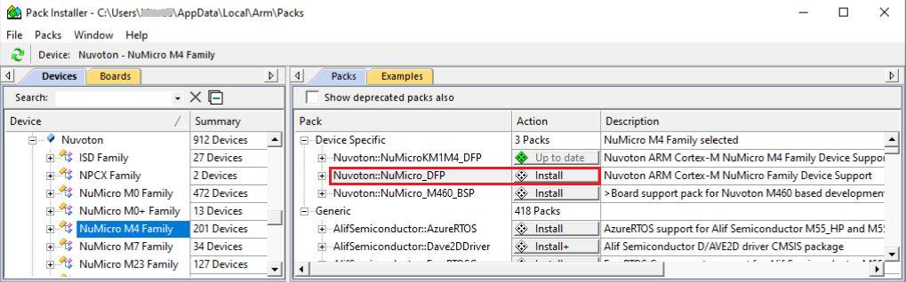
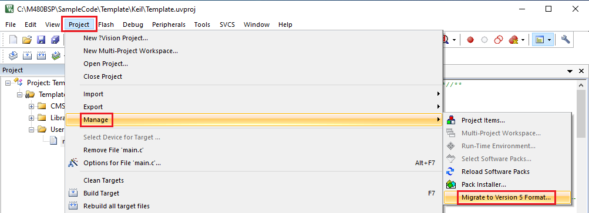
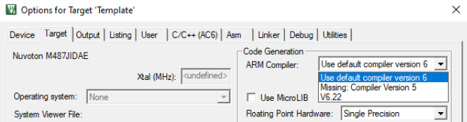
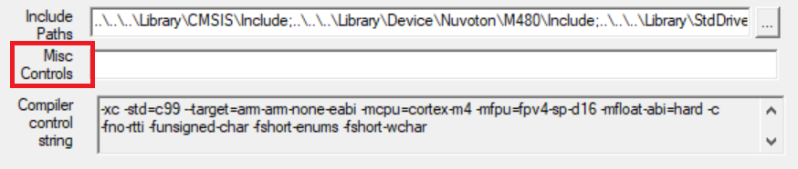
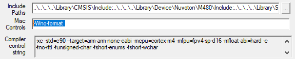
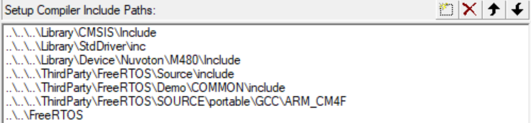
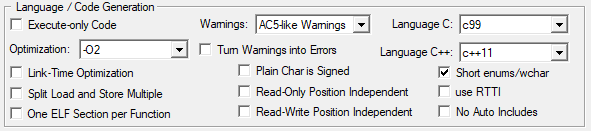
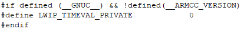

Doc/Manual/en-us--AN_0080_Migrate_NuMicro_BSP_to_ARM_Compiler_6_EN_Rev1.00.pdf
NuMicro 전 시리즈 BSP를 Arm Compiler 5 환경에서 Arm Compiler 6 환경으로 옮겨야 하는 개발자
- Keil MDK Nuvoton Edition과 DFP 준비
retarget.c,startup_xxx.s교체*.uvproj를*.uvprojx로 변환- Arm Compiler 6 선택 및 진단 억제 옵션 정리
- M480 BSP 예제별 추가 설정
원문 내용을 한국어로 줄 단위에 가깝게 정리했습니다.
그림은 PDF의 Figure 2-1, Figure 3-1, Figure 3-2, Figure 3-3, Figure 4-1, Figure 4-2, Figure 4-3, Figure 4-4 순서로 맞춰 배치했습니다.
같은 챕터에 그림이 둘 이상 있는 경우 2열 그리드로 묶었습니다.
Arm Compiler 6(AC6)은 MDK Version 5에서 사용할 수 있습니다.
Arm Compiler 6은 새로운 기술 기반이므로 기존 Arm Compiler 5와는 부분적으로만 호환됩니다.
이 애플리케이션 노트는 기존 소스 코드를 Arm Compiler 6으로 포팅할 때 필요한 핵심 절차를 요약합니다.
더 자세한 내용이 필요하면 Migrate Arm Compiler 5 to Arm Compiler 6 키워드로 MDK 튜토리얼 PDF를 참고하면 됩니다.
Arm과 Nuvoton은 상용 개발에도 사용할 수 있는 무료 전문 툴체인 Keil MDK Nuvoton Edition – Full Cortex-M을 제공합니다.
이 에디션은 Arm Cortex-M0, M0+, M23, M33, M4, M55, M7, M85 기반의 Nuvoton 디바이스를 지원합니다.
Keil MDK Version 5.37 이상에서 사용할 수 있으며 Arm Compiler 6만 지원합니다.
다운로드 경로: Nuvoton Keil Download
Pack Installer에서 Nuvoton이 제공하는 Device Family Pack을 설치해야 합니다.
Arm Compiler 6 사용 시 최소 권장 버전은 Nuvoton.NuMicro_DFP.1.3.25.pack 이상입니다.

이 장은 Arm Compiler 5 기반 샘플 코드를 Arm Compiler 6으로 옮기는 가장 기본적인 절차를 설명합니다.
초기 마이그레이션 단계에서는 경고보다 에러에 먼저 집중할 수 있도록 경고 레벨을 No Warnings로 두는 것이 권장됩니다.
- AC6를 지원하는 최신 BSP에서
retarget.c와startup_xxx.s확보 - 프로젝트 파일 확장자를
*.uvproj에서*.uvprojx로 변경 - µVision IDE에서 Arm Compiler 6 선택
- µVision IDE에 남아 있는 진단 억제 옵션 정리
- 필요하면
AC5-like Warnings선택
Arm Compiler 6 어셈블리 문법은 기존 Arm 스타일이 아니라 GNU 스타일과 호환됩니다.
그래서 가장 간단한 해결 방법은 AC6를 지원하는 최신 NuMicro BSP에서 retarget.c와 startup_xxx.s를 가져와 기존 소스에 교체하는 것입니다.
작업 전에는 기존 소스를 백업해 두는 것이 좋습니다.
BSP 다운로드 경로: OpenNuvoton GitHub
- 기존 Keil 프로젝트
*.uvproj를 엽니다. - 메인 메뉴에서
Project > Manage > Migrate to Version 5 Format...를 선택합니다. - 변환이 끝나면 프로젝트가
*.uvprojx로 저장됩니다.
변환 후에는 Target 메모리 설정과 Debugger 설정이 바뀌었는지 반드시 확인해야 합니다.


- Keil 프로젝트를 열고
Project > Options for Target를 선택합니다. - Arm Compiler를 MDK에 포함된
Version 6.x로 지정합니다. OK를 눌러 메인 화면으로 돌아옵니다.
- Keil 프로젝트를 열고
Project > Options for Target를 선택합니다. C/C++ (AC6)탭에서Misc Controls의--diag_suppress파라미터를 제거합니다.OK를 눌러 메인 화면으로 돌아옵니다.

3장의 기본 절차 외에도 일부 샘플 코드는 추가 설정이 필요합니다.
이 장은 M480 BSP 샘플을 기준으로, MDK 5.41 환경에서 Arm Compiler 5에서 6으로 옮길 때 필요한 설정을 예시로 보여줍니다.
샘플마다 세부 설정은 조금씩 다를 수 있습니다.
retarget.c와startup_M480.s를 교체합니다.- 프로젝트 파일 확장자를
*.uvprojx로 변경합니다. - Arm Compiler 6으로 전환합니다.
C/C++ (AC6)탭의Misc Controls에-Wno-format을 추가해 format 문자열 관련 경고를 억제합니다.- 프로젝트를 다시 빌드합니다.

retarget.c와startup_M480.s를 교체합니다.- 프로젝트 파일 확장자를
*.uvprojx로 변경합니다. - Arm Compiler 6으로 전환합니다.
port.c를 RVDS 버전에서 GCC 버전으로 교체하고 include path를ThirdParty\FreeRTOS\Source\portable\GCC\ARM_CM4F로 맞춥니다.C/C++ (AC6)탭의 Language C를C99로 설정합니다.- 프로젝트를 다시 빌드합니다.


retarget.c와startup_M480.s를 교체합니다.- 프로젝트 파일 확장자를
*.uvprojx로 변경합니다. - Arm Compiler 6으로 전환합니다.
C/C++ (AC6)탭의Misc Controls에서--diag_suppress를 제거합니다.port.c를 GCC 버전으로 교체하고 include path를ThirdParty\FreeRTOS\Source\portable\GCC\ARM_CM4F로 수정합니다.C/C++ (AC6)탭의 Language C를C99로 설정합니다.lwipopts.h에서__GNUC__매크로 판별 로직을 수정합니다. Arm Compiler 6도__GNUC__를 정의하므로 잘못된 코드 경로가 선택될 수 있습니다.

2024.12.18 / Rev. 1.00
초기 버전